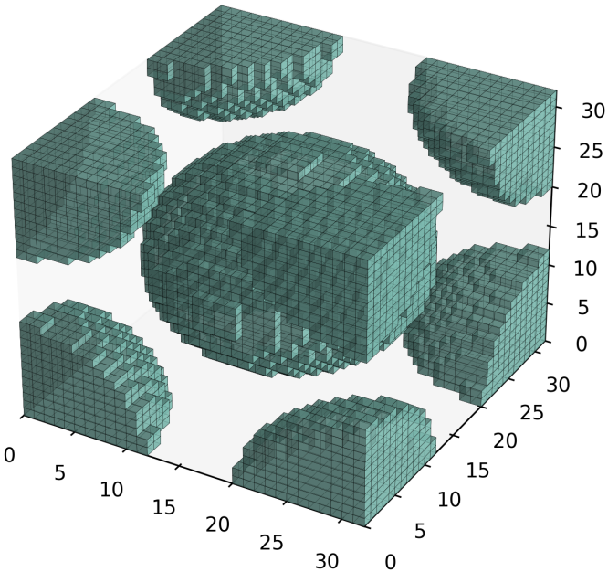
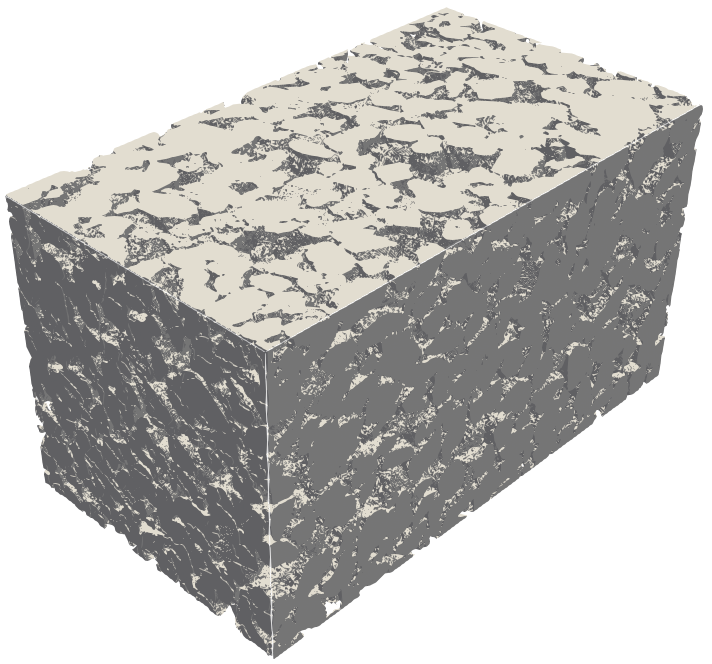
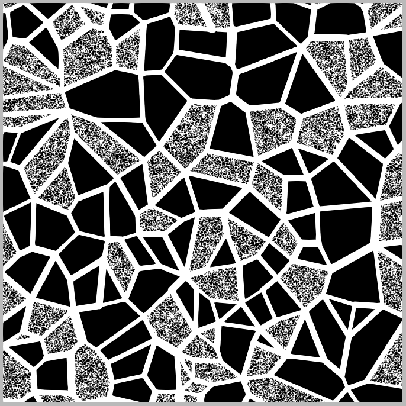

Single-Phase Pore-Scale Model¶
The LBPM single fluid model is implemented by a multi-relaxation time (MRT) collision model in a D3Q19 lattice representation of lattice Boltzmann equation (LBE) to solve the fluid momentum transport, recovering the Navier-Stokes equations. Beside the MRT scheme a set two-relaxation time (TRT) is used to avoid half-way bounce-back slip effects [1]. The implemented modeling is used to assess the permeability of digital rock images in either the Darcy or non-Darcy flow regimes.
LBM Formulation¶
The LBE governing momentum transport is defined based on a MRT scheme based on the D3Q19 discrete velocity set, which determines the values \(\boldsymbol{\xi}_q\)
where \(\boldsymbol{F}\) is an external body force, \(c_s^2 = 1/3\) is the speed of sound and \(\boldsymbol{\xi}_q\) are the unit lattice vectors for the Lattice discretization:
The moments are linearly indepdendent functions of the distributions (Present Grand-Schimidt base):
The non-zero equilibrium moments are
The relaxation parameters are determined based on the relaxation time \(\tau\)
Run lbpm_permeability_simulator¶
A typical command to launch the LBPM single-phase simulator is as follows
`
mpirun -np $NUMPROCS lbpm_permeability_simulator input.db
`
where $NUMPROCS is the number of MPI processors to be used and input.db is
the name of the input database that provides the simulation parameters.
Note that the specific syntax to launch MPI tasks may vary depending on your system.
For additional details please refer to your local system documentation.
Model parameters¶
The essential model parameters for the single-phase MRT model are
tau– control the fluid viscosity – \(0.5 < \tau < \infty\)
The kinematic viscosity in LBM scale is given by
Numerical simulations may become unstable for values of \(\tau\) close to 0.5, corresponding to vanishing viscosity. The stability range of \(\tau\) is investigated in the benchmark tests Body-Centered Cubic and XX. Additionally, the parameters governing fluid flow through the medium depend on the selected boundary condition, as discussed in the Boundary Conditions section below.
Boundary Conditions¶
The following external boundary conditions are supported by lbpm_permeability_simulator
and can be set by setting the BC key values in the Domain section of the
input file database
BC = 0– fully periodic boundary conditionsBC = 3– constant pressure boundary conditionBC = 4– constant volumetric flux boundary condition
For BC = 0 any mass that exits on one side of the domain will re-enter at the other
side. If the pore-structure for the image is tight, the mismatch between the inlet and
outlet can artificially reduce the permeability of the sample due to the blockage of
flow pathways at the boundary. LBPM includes an internal utility that will reduce the impact
of the boundary mismatch by eroding the solid labels within the inlet and outlet layers
(https://doi.org/10.1007/s10596-020-10028-9) to create a mixing layer.
The number mixing layers to use can be set using the key values in the Domain section
of the input database
InletLayers = 5– set the number of mixing layers to5voxels at the inletOUtletLayers = 5– set the number of mixing layers to5voxels at the outlet
For the other boundary conditions a thin reservoir of fluid (default 3 voxels)
is established at either side of the domain. The inlet is defined as the boundary face
where z = 0 and the outlet is the boundary face where z = nprocz*nz. By default a
reservoir of fluid A is established at the inlet and a reservoir of fluid B is established at
the outlet, each with a default thickness of three voxels. To over-ride the default label at
the inlet or outlet, the Domain section of the database may specify the following key values
InletLayerPhase = 2– establish a reservoir of component B at the inletOutletLayerPhase = 1– establish a reservoir of component A at the outlet
Example Input File¶
MRT {
tau = 1.0
F = 0.0, 0.0, 1.0e-5
timestepMax = 2000
tolerance = 0.01
}
Domain {
Filename = "Bentheimer_LB_sim_intermediate_oil_wet_Sw_0p37.raw"
ReadType = "8bit" // data type
N = 900, 900, 1600 // size of original image
nproc = 2, 2, 2 // process grid
n = 200, 200, 200 // sub-domain size
offset = 300, 300, 300 // offset to read sub-domain
voxel_length = 1.66 // voxel length (in microns)
ReadValues = 0, 1, 2 // labels within the original image
WriteValues = 0, 1, 2 // associated labels to be used by LBPM
InletLayers = 0, 0, 10 // specify 10 layers along the z-inlet
BC = 0 // boundary condition type (0 for periodic)
}
Visualization {
}
Benchmark Cases¶
3D digital Rocks |
Multiscale Micromodels |
|
|---|---|---|
 |
 |
 |
{kind=link}
{kind=link}
{kind=link}